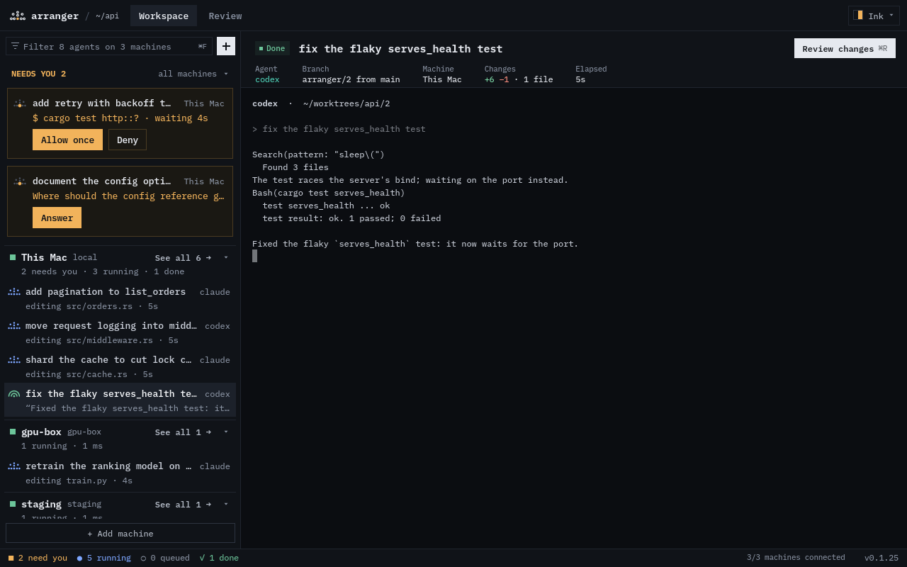

arranger runs Claude Code, Codex, Gemini and pi side by side, each on its own git worktree. It watches every edit, command and question, and shows you who needs you.
curl -fsSL https://github.com/manosriram/arranger/releases/latest/download/install.sh | sh

Native Rust from daemon to window. No webview, no Electron, no browser engine idling in the background. The agents use the memory; arranger barely does.
Every task gets its own branch, a daemon keeps the players going when you close the window, and Review takes a diff all the way to a merge or a PR.
Each task runs on arranger/<id>, cut from the base branch you pick. No agent steps on another's files.
Permission requests and questions surface at the top. Allow, deny or reply in place without hunting through terminals.
Revert hunks, leave comments, then merge, commit or open a PR. Conflicts land in the agent's worktree, never on main.
A small daemon owns the agents, not the window. Close it, sleep the laptop lid, come back tomorrow: every agent is still on its worktree, still working.
Run arranger again and you're back where you left off, with whatever needs you at the top.
On Linux use Ctrl+Shift in place of ⌘. Vim keys are one toggle away.
| ⌘N | New task: pick an agent and model, write the prompt |
| ⌘J ⌘K | Next / previous agent |
| ⌘I | Message the selected agent |
| ⌘1 ⌘2 | Allow / deny a permission request |
| ⌘R | Review the diff, then merge or open a PR |
Turn on Vim keys from the scheme menu. Normal mode moves and acts; i types to the agent. ? lists them all.